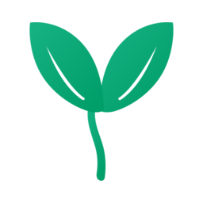
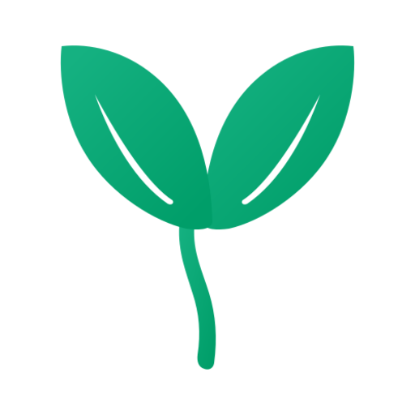
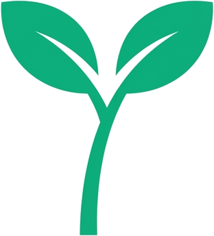
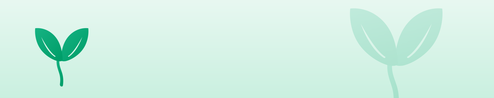

3c0fa1e · PR #17–#22 머지 · 174+3 tests green · README 깨진 표시는 stale(재업로드하면 사라짐)dev.subreddit = SocialSeeding/Users/kimsejun/Documents/GitHub/vibe-mod · node v24 · npm install 사용(npm ci는 esbuild EBADPLATFORM)devvit publish --public)를 ~2026-05-18(D-9)까지 시작해야 마감 전 승인됨. ⇒ A1–A4를 이번 주 안에./Users/kimsejun/Documents/GitHub/vibe-mod. 막히면 진단 npm run doctor. ⚠️ 8080 포트 등 프로덕션 서버(별개 프로젝트)는 절대 건드리지 마세요.dev.subreddit(#22)·README 수정까지 반영 후 빌드.cd /Users/kimsejun/Documents/GitHub/vibe-mod
git checkout main && git pull
npm install # (npm ci 는 esbuild EBADPLATFORM 으로 실패)
npm run build # tsc --noEmit && vite build → dist/server/index.cjs
npm run doctor # 로그인 후 0 hard / 0 warning 이어야u/DragonfruitAfraid309로 로그인했으면 whoami만 확인. 안 됐으면 login (브라우저 인증).npx devvit whoami # 안 되어 있으면 ↓
npx devvit login✨ Visit https://developers.reddit.com/apps/vibe-mod. 이걸 하면 앱 페이지의 깨진 README 텍스트도 사라집니다.npx devvit uploadvibe-mod는 그대로 OK.) "Archive"(빨간 글씨)는 절대 누르지 말 것 — 앱 삭제됨. Verification/Payments는 인앱 결제 안 쓰므로 무시.<!-- TODO --> 텍스트나 깨진 이미지가 더 이상 안 보여야 정상.dev.subreddit이 r/SocialSeeding이라 인자 없이 동작. 코드 저장할 때마다 자동 재설치. Ctrl+C로 종료(설치는 유지).npm run dev # = devvit playtest (r/SocialSeeding)
# 필요 시 다른 터미널에서:
npx devvit logs SocialSeeding vibe-mod --since 5m --verbosenpx devvit playtest r/<그_서브>로 덮어쓰기.npx devvit settings set openaiApiKey # sk-... 붙여넣기
npx devvit settings list # 저장 확인 (값은 마스킹)shadowDurationHours = 0; 로그 경로만 보려면 dryRunOnly 켜둔 채로.npx devvit logs SocialSeeding vibe-mod --since 5m --verbose 출력 + 에러를 복사해서 다음 세션에 붙여넣기 → Claude가 고침. (타입·번들·테스트는 통과 — Devvit 라우팅/페이로드 주입은 playtest로만 검증됨)npx devvit publish --publicnpx devvit install r/SocialSeeding로 설치 가능. 승인되면 r/SocialSeeding에 정식 설치 + 핀 게시물 C-5 게시.shadowDurationHours: 0 · 테스트 포스트 2–3개 미리 작성 · dry-run 30초 대기는 오프카메라.claudedocs/gap-analysis/10-demo-storytelling.md — 필요하면 다음 세션에 Claude에게 정리 요청)docs/devpost-submission.md에 7섹션 글 + Built-With + Project-Impact 초안 있음. 남은 <<...>>만 채우면 됨: App Directory URL(publish 후), 데모 영상 URL, 베타 커뮤니티 2·3번 (1번은 r/SocialSeeding으로 채워둠). 초안 다듬기 도움이 필요하면 다음 세션에 Claude에게.socialseed.ing의 새싹 마크를 추출 → SVG로 재작성 → PNG로 변환했습니다. 파일 위치: claudedocs/reddit-assets/ (이 파일과 같은 폴더). 추가 크기/변형이 필요하면 다음 세션에 Claude에게 요청.




claudedocs/reddit-assets/community-icon-256.png. (원형 크롭 대비 패딩 포함)community-banner-1920x384.png.Case Study · Question · Tool · Discussion · Resource.comment/modmail 액션 + {{placeholder}} · onModAction 구독 · cross-trigger 상태 레이어(반복 위반자, "1시간에 N개") · 제대로 된 Dashboard UI. 전체 우선순위·근거: claudedocs/gap-analysis/00-SUMMARY.md. — PR #19(dependabot eslint 10 bump)도 CI 실패라 닫는 게 맞음(GitHub UI에서 Close, 또는 다음 세션에 Claude에게).